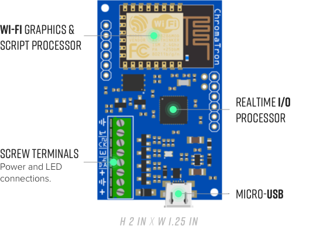
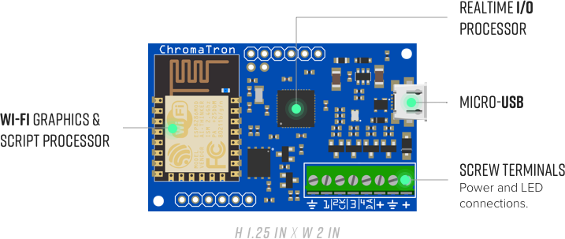

Chromatron is an open source pixel controller designed to make LED pixel projects easy and fun.
Drive 300 pixels of a variety of types without additional circuitry or firmware modifications.
Create high quality animation and fading effects with per-pixel faders, robust dimming controls, and 16 bit internal computations.
Easily control and coordinate multiple devices wirelessly.
Chromatron's FX Script is a simple language designed specifically for pixel graphics.
The Python library and CLI make it easy to integrate Chromatron into other projects.
Real-time pixel streaming, simple hardware connections, and much more.
Discover, configure, and control devices over Wi-Fi with our Python library and Command Line Interface tools:
from chromatron import *
# Discover devices in living room
group = DeviceGroup('living_room')
# Load rainbow effect script
group.load_vm('rainbow.fx')
# Set master dimmer to 50%
group.dimmer = 0.5
# Install Python library
pip install chromatron
# Discover devices in living room
chromatron --query living_room discover
# Load rainbow FX script to previous group
chromatron vm load rainbow.fx
# Set master dimmer to 50%
chromatron dimmer master 0.5
FX Script is a hybrid language based on Python syntax running on a custom designed virtual machine that makes it easy to generate graphics directly on hardware. FX can compile and load in real-time to get instant visual feedback.
# this script generates a rolling rainbow pattern
# declare a global variable for current hue
current_hue = Number()
# init - runs once when script is loaded
def init():
# set pixels to full colors (maximum saturation)
pixels.sat = 1.0
# set to maximum brightness
pixels.val = 1.0
# runs periodically, frame rate is configurable
def loop():
# increment the base hue so the rainbow pattern
# shifts across the pixels
current_hue += 0.005
# declare a local variable
a = Number()
a = current_hue
# loop over all pixels in array
for i in pix_count():
pixels[i].hue = a
# shift color for next iteration
a += 1.0 / pix_count()
 
Runs the real time OS, handles raw pixel data output, USB, auxiliary IO, and the user file system.
Handles Wi-Fi communications, scripting engine VM, pixel faders, and HSV to RGB colorspace conversion. Connected to the real time processor via 4 MHz UART bridge.
Sapphire Open Systems is an Austin, TX based startup whose mission is to enable hobbyists, makers, and professionals to connect anything to everything and promote open source as a better way to make electronics.
All software and hardware will be released under OSI compatible licenses once the project hits the funding goal.